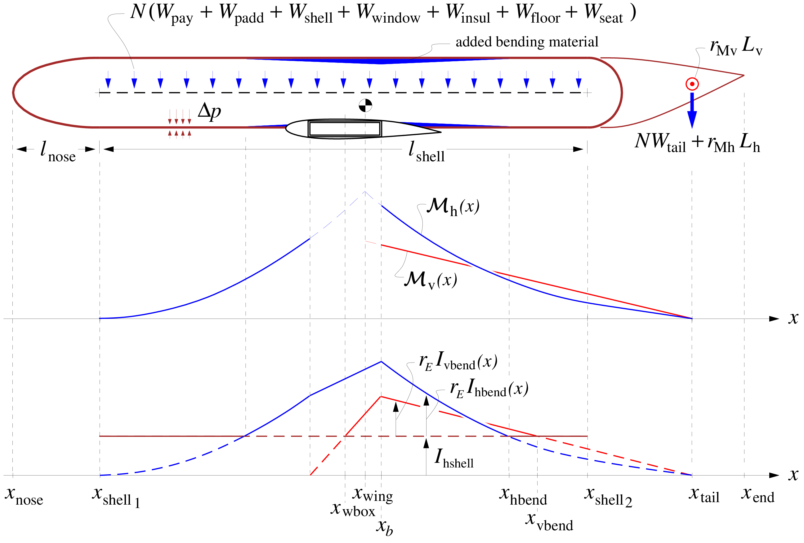
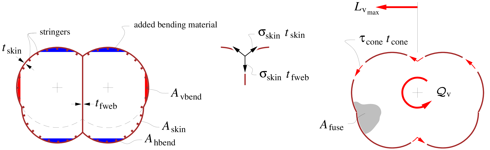
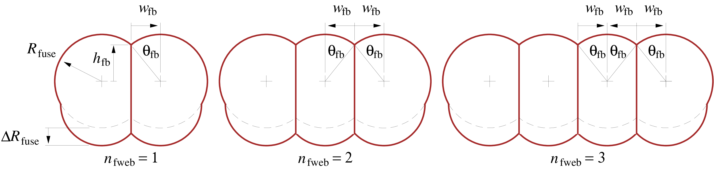

Fuselage

Fuselage pressure and torsion loads
The fuselage is modeled as a side-by-side "multi-bubble" pressure vessel with an ellipsoidal nose endcap and a hemispherical tail endcap, which is subjected to pressurization, bending, and torsion loads, as shown in the first two figures. The loaded cylindrical length of the pressure vessel shell is from $x_{{\rm shell}_{\,1}}$ to $x_{{\rm shell}_{\,2}}$. $\begin{aligned} l_{\rm shell}& = & x_{{\rm shell}_{\,2}} \,-\, x_{{\rm shell}_{\,1}} \end{aligned}$
The horizontal-axis moment ${\cal M}_{\rm h}{\scriptstyle (x)}$ distributions on the front and back bending fuselage are assumed to match at location $x_{\rm wing}$, as shown in the first figure. Theoretically this is the wing's net lift–weight centroid, which varies somewhat depending the fuel fraction in the wings, the wing's profile pitching moment and hence the flap setting, and on the aircraft $C_{\!L}$. For simplicity it will be approximated as the wing's area centroid. Note that for a swept wing the wing box location $x_{\rm wbox}$ will be centered somewhat ahead of $x_{\rm wing}$, but it will then also impart a pitch-axis moment at its location, so that the front and back ${\cal M}_{\rm h}{\scriptstyle (x)}$ distributions must still match at $x_{\rm wing}$.
The second figure shows the fuselage cross section for the case of a "double-bubble", or two tubes. The next figure compares to alternative possible cross sections with three or four tubes, each specified by the number of webs $n_{\rm fweb}$. The pressure-vessel skin and endcaps have a uniform thickness $t_{\rm skin}$, while each of the $n_{\rm fweb}$ tension web(s) has an average thickness $t_{\rm fweb}$. The cross-sectional area of the skin is $A_{\rm skin}$, and has stiffening stringers which have a "smeared" average area $A_{\rm skin}f_{\rm string}\rho_{\rm skin}/\rho_{\rm bend}$, specified via the empirical stringer/skin weight fraction $f_{\rm string}$. The enclosed area $S_{\rm skin}$ enters the torsional stiffness and strength calculations. The fuselage cross section also shows the possibility of added bottom bubbles or fairings, extended downward by the distance $\Delta R_{\rm fuse}$.

The skin and stringers constitute the "shell", which has bending inertias $I_{\rm hshell}, I_{\rm vshell}$ about the horizontal and vertical axes. The second figure does not show any hoop-stiffening frames which are typically required, and whose weight is a specified fraction $f_{\rm frame}$ of the skin weight. These typically may be offset from the skin inside of the stringers, and hence are assumed to not contribute to the skin's circumferential tensile strength.
To address the weight and aerodynamic loads of the tail group on the fuselage, the horizontal and vertical tails, the tailcone, and any rear-mounted engines are treated as one lumped mass and aero force at location $x_{\rm tail}$, shown in Figure 2.
The bending loads on the shell may require the addition of vertical-bending material concentrated on top and bottom of the fuselage shell (typically as skin doublers or additional stringers). The total added cross sectional area is $A_{\rm hbend}{\scriptstyle (x)}$, and the associated added bending inertia is $I_{\rm hbend}{\scriptstyle (x)}$. Corresponding added material on the sides has $A_{\rm vbend}{\scriptstyle (x)}$ and $I_{\rm vbend}{\scriptstyle (x)}$. Because the wing box itself will contribute to the fuselage bending strength, these added areas and bending inertias do not match the ${\cal M}{\scriptstyle (x)}$ distribution there, but are made linear over the wing box extent, as shown in figure 2.

📖 Theory - Cross-section relations
The fuselage pressure shell has the following geometric relations and beam quantities.
$\begin{aligned} \theta_{\rm fb} &= \arcsin (w_{\rm fb}/ R_{\rm fuse}) \\ h_{\rm fb} &= \sqrt{R_{\rm fuse}^2 - w_{\rm fb}^2} \\ A_{\rm skin} &= \left( 2\pi + 4n_{\rm fweb}\theta_{\rm fb}\right) R_{\rm fuse}\, t_{\rm skin} \:+\: 2 \Delta R_{\rm fuse}\, t_{\rm skin} \\ A_{\rm fweb} &= n_{\rm fweb}(2 h_{\rm fb}+ \Delta R_{\rm fuse}) \, t_{\rm fweb} \\ A_{\rm fuse} &= \left[ \pi + n_{\rm fweb}\left( 2\theta_{\rm fb}+ \sin 2 \theta_{\rm fb}\right) \right] R_{\rm fuse}^2 \;+\; 2 \left[ R_{\rm fuse}+ n_{\rm fweb}w_{\rm fb}\right] \Delta R_{\rm fuse} \end{aligned}$
The skin has some modulus and density $E_{\rm skin}, \rho_{\rm skin}$, while the stringers have some possibly different values $E_{\rm bend}, \rho_{\rm bend}$. The effective modulus-weighted "shell" thickness $t_{\rm shell}$ can then be defined as follows, assuming that only the skin and stringers contribute to bending, but not the frames.
$\begin{aligned} t_{\rm shell} &= \frac{(E t)_{\rm skin}}{E_{\rm skin}} \;=\; t_{\rm skin} \left( 1 + r_{\! \scriptscriptstyle E}\, f_{\rm string}\frac{\rho_{\rm skin}}{\rho_{\rm bend}} \right) \\ \rm{where} \hspace{5ex} r_{\! \scriptscriptstyle E} &= \frac{E_{\rm bend}}{E_{\rm skin}} \end{aligned}$
This is then convenient for determining the modulus-weighted horizontal-axis and vertical-axis bending inertias. The fuselage webs, if any, are assumed to be made of the same material as the skin. The passenger-access cutouts will not extend all the way to the skin/web junctions, so that the webs' contributions are included in the overall shell bending inertia. $\begin{aligned} I_{\rm hshell} &= \frac{(EI)_{\rm hshell}}{E_{\rm skin}} \nonumber \\ &= \;\; 4 \int_0^{\pi/2} \hspace{-2ex} \left( R_{\rm fuse}\sin\theta + \Delta R_{\rm fuse}/2 \right)^2 \, R_{\rm fuse}\, t_{\rm shell}\:\: {\rm d}\theta \nonumber \\ &+ 4 n_{\rm fweb}\!\! \int_{\pi/2}^{\pi/2+\theta_{\rm fb}} \hspace{-2ex} \left( R_{\rm fuse}\sin\theta + \Delta R_{\rm fuse}/2 \right)^2 \, R_{\rm fuse}\, t_{\rm shell}\:\: {\rm d}\theta \;+\; \frac{2}{3} n_{\rm fweb}(h_{\rm fb}+\Delta R_{\rm fuse}/2)^3 t_{\rm fweb} \nonumber \\ &= \left\{ \rule[-0.5em]{0em}{1.5em} \left[ \, \pi + n_{\rm fweb}( 2\theta_{\rm fb}\!+\! \sin 2 \theta_{\rm fb}) \right] R_{\rm fuse}^2 \right. \nonumber \\[0.25em] & \;\; + \; 8 n_{\rm fweb}\cos \theta_{\rm fb}\: (\Delta R_{\rm fuse}/2) \, R_{\rm fuse} \nonumber \\[0.25em] & \left. \;\;+ \left[ 2\pi \!+\! 4 n_{\rm fweb}\theta_{\rm fb}\right] (\Delta R_{\rm fuse}/2)^2 \; \rule[-0.5em]{0em}{1.5em} \right\} R_{\rm fuse}\, t_{\rm shell} \;\;\;+\; \frac{2}{3} n_{\rm fweb}(h_{\rm fb}+\Delta R_{\rm fuse}/2)^3 t_{\rm fweb} \\ I_{\rm vshell}& = \frac{(EI)_{\rm vshell}}{E_{\rm skin}} \nonumber \\ & = \;\; 4 \int_0^{\pi/2} \hspace{-2ex} \left( R_{\rm fuse}\cos\theta + n_{\rm fweb}w_{\rm fb}\right)^2 \, R_{\rm fuse}\, t_{\rm shell}\:\: {\rm d}\theta \nonumber \\ & + \;\! 4 n_{\rm fweb}\!\! \int_{\pi/2}^{\pi/2+\theta_{\rm fb}} \hspace{-2ex} \left( R_{\rm fuse}\cos\theta \right)^2 \, R_{\rm fuse}\, t_{\rm shell}\:\: {\rm d}\theta \;+\; \sum_{k=1}^{n_k} 4 R_{\rm fuse}t_{\rm shell}\theta_{\rm fb}w_{\rm fb}^2 (2k \!-\! i_k)^2 \nonumber \\ &= \left[ \rule[-0.5em]{0em}{1.5em} \left[ \, \pi + n_{\rm fweb}(2\theta_{\rm fb}\!-\! \sin 2 \theta_{\rm fb}) \right] R_{\rm fuse}^2 \right. \nonumber \\[0.25em] & \;\;+ \; 8 \cos \theta_{\rm fb}\: n_{\rm fweb}w_{\rm fb}\, R_{\rm fuse} \nonumber \\[0.25em] & \;\;+ \left( 2\pi \!+\! 4\theta_{\rm fb}\right) (n_{\rm fweb}w_{\rm fb})^2 \; \nonumber \\[0.25em] & \left. \;+\; 4 \theta_{\rm fb}w_{\rm fb}^2 \sum_{k=1}^{n_k} (2k \!-\! i_k)^2 \rule[-0.5em]{0em}{1.5em} \right] R_{\rm fuse}\, t_{\rm shell} \\ n_k &= {\rm int}(n_{\rm fweb}/2) \\ i_k &= {\rm mod}(n_{\rm fweb}\!+\!1 \, , \, 2) \hspace{4ex} \end{aligned}$
It's useful to note that for the particular case of $n_{\rm fweb}=0, w_{\rm fb}=0$, together with $\Delta R_{\rm fuse}= 0$, there is only one circle. The areas and bending inertias then reduce to those for a single circular cross-section.
$\begin{aligned} \hspace{6ex} A_{\rm skin}& = & 2 \pi R_{\rm fuse}\, t_{\rm skin} \hspace{6ex} (\rm if\, n_{\rm fweb}=0, w_{\rm fb}= 0, \Delta R_{\rm fuse}= 0) \\ \hspace{6ex} S_{\rm skin}& = & \pi R_{\rm fuse}^2 \hspace{11ex} (\rm if\, n_{\rm fweb}=0, w_{\rm fb}= 0, \Delta R_{\rm fuse}= 0) \\ \hspace{6ex} I_{\rm hshell}\;=\; I_{\rm vshell}& = & \pi R_{\rm fuse}^3 \, t_{\rm shell} \hspace{7ex} (\rm{if}\, n_{\rm fweb}=0, w_{\rm fb}= 0, \Delta R_{\rm fuse}= 0) \end{aligned}$
Hence, no generality is lost with this multiple-bubble cross-section model.
Pressure shell loads
The pressurization load from the $\Delta p$ pressure difference produces the following axial and hoop stresses in the fuselage skin, with the assumption that the stringers share the axial loads, but the frames do not share the hoop loads. This assumes a typical aluminum fuselage structure, where the stringers are contiguous and solidly riveted to the skin, but the frames are either offset from the skin or have clearance cutouts for the stringers which interrupt the frames' hoop loads.
\[\begin{aligned} \sigma_x & = & \frac{\Delta p}{2} \, \frac{R_{\rm fuse}}{t_{\rm shell}} \\ \sigma_\theta & = & \Delta p \, \frac{R_{\rm fuse}}{t_{\rm skin}} \end{aligned}\]
An isotropic (metal) fuselage skin thickness $t_{\rm skin}$ and the web thickness $t_{\rm fweb}$ will therefore be sized by the larger $\sigma_\theta$ value in order to meet an allowable stress $\sigma_{\rm skin}$. $\begin{aligned} t_{\rm skin}& = & \frac{\Delta p \, R_{\rm fuse}}{\sigma_{\rm skin}} %%\label{tfuse} \\ t_{\rm fweb}& = & 2 \, \frac{\Delta p \, w_{\rm fb}}{\sigma_{\rm skin}} \end{aligned}$ This particular $t_{\rm fweb}$ value is obtained from the requirement of equal circumferential stress in the skin and the web, and tension equilibrium at the 3-point web/skin junction.
The volume of the skin material ${\cal V}_{\rm skin}$ is obtained from the cross-sectional skin area, plus the contribution of the ellipsoidal nose endcap and the spherical rear bulkhead. The nose uses Cantrell's approximation for the surface area of an ellipsoid.
\[\begin{align} S_{\rm nose} &\simeq \left[ 2\pi + 4n_{\rm fweb}\theta_{\rm fb}\right] R_{\rm fuse}^2 \left[ \frac{1}{3} + \frac{2}{3} \left( \frac{l_{\rm nose}}{R_{\rm fuse}} \right)^{\!\!8/5} \right]^{\! 5/8} \nonumber \\ & \hspace{5em} \nonumber\\ S_{\rm bulk} &\simeq \left[ 2\pi + 4n_{\rm fweb}\theta_{\rm fb}\right] R_{\rm fuse}^2 \nonumber \\ & \hspace{5em} \nonumber\\ {\cal V}_{\rm cyl} &= A_{\rm skin}\, l_{\rm shell} \nonumber \\ {\cal V}_{\rm nose} &= S_{\rm nose}\, t_{\rm skin} \nonumber \\ {\cal V}_{\rm bulk} &= S_{\rm bulk}\, t_{\rm skin} \nonumber \\ {\cal V}_{\rm fweb} &= A_{\rm fweb}\, l_{\rm shell} \nonumber \\ x \hspace{-0.4ex} {\cal V}_{\rm cyl} &= {\textstyle \frac{1}{2}}(x_{{\rm shell}_{\,1}} + x_{{\rm shell}_{\,2}}) \: {\cal V}_{\rm cyl} \nonumber \\ x \hspace{-0.4ex} {\cal V}_{\rm nose} &= {\textstyle \frac{1}{2}}(x_{\rm nose} + x_{{\rm shell}_{\,1}}) \: {\cal V}_{\rm nose} \nonumber \\ x \hspace{-0.4ex} {\cal V}_{\rm bulk} &= (x_{{\rm shell}_{\,2}} + {\textstyle \frac{1}{2}}\Delta R_{\rm fuse}) \: {\cal V}_{\rm bulk} \nonumber \\ x \hspace{-0.4ex} {\cal V}_{\rm fweb} &= {\textstyle \frac{1}{2}}(x_{{\rm shell}_{\,1}} + x_{{\rm shell}_{\,2}}) \: {\cal V}_{\rm fweb} \nonumber \end{align}\]
The total fuselage shell weight then follows by specifying a material density $\rho_{\rm skin}$ for the skin and web. The assumed skin-proportional added weights of local reinforcements, stiffeners, and fasteners are represented by the $f_{\rm fadd}$ fraction, and stringers and frames are represented by the $f_{\rm string},f_{\rm frame}$ fractions.
\[\begin{aligned} W_{\rm skin} &= \rho_{\rm skin}\, g \: ({\cal V}_{\rm cyl}+ {\cal V}_{\rm nose}+ {\cal V}_{\rm bulk}) \\ W_{\rm fweb} &= \rho_{\rm skin}\, g \: {\cal V}_{\rm fweb} \\ x \hspace{-0.45ex} W_{\rm skin} &= \rho_{\rm skin}\, g \: (x \hspace{-0.4ex} {\cal V}_{\rm cyl}+ x \hspace{-0.4ex} {\cal V}_{\rm nose}+ x \hspace{-0.4ex} {\cal V}_{\rm bulk}) \\ x \hspace{-0.45ex} W_{\rm fweb} &= \rho_{\rm skin}\, g \: x \hspace{-0.4ex} {\cal V}_{\rm fweb} \\[0.5em] W_{\rm shell} &= W_{\rm skin}(1\!+\!f_{\rm string}\!+\!f_{\rm frame}\!+\!f_{\rm fadd}) \:+\: W_{\rm fweb} \\ x \hspace{-0.45ex} W_{\rm shell} &= x \hspace{-0.45ex} W_{\rm skin}(1\!+\!f_{\rm string}\!+\!f_{\rm frame}\!+\!f_{\rm fadd}) \:+\: x \hspace{-0.45ex} W_{\rm fweb} \end{aligned}\]
Fuselage bending loads
In addition to the pressurization and torsion loads, the fuselage also sees bending loads from its distributed weight load plus the tail weight and airloads. In the case where the pressurization-sized shell is not sufficient to withstand this, additional bending material area is assumed to be added at the top and bottom (total of $A_{\rm hbend}{\scriptstyle (x)}$), and also sides of the shell (total of $A_{\rm vbend}{\scriptstyle (x)}$), as shown in figure 2. If the shell is sufficiently strong, then these areas will be zero.
Total fuselage weight
The total fuselage weight includes the shell with stiffeners, tailcone, floor beams, fixed weight, payload-proportional equipment and material, seats, and the added horizontal and vertical-axis bending material.
\[\begin{aligned} W_{\rm fuse} &= \, W_{\rm fix}\:+\: W_{\rm apu}\:+\: W_{\rm padd}\:+\: W_{\rm seat} \nonumber \\ & + \; W_{\rm shell}\:+\: W_{\rm cone}\:+\: W_{\rm window}\:+\: W_{\rm insul}\:+\: W_{\rm floor} \nonumber \\ & +\; W_{\rm hbend}\:+\: W_{\rm vbend} \\ \\ x \hspace{-0.45ex} W_{\rm fuse} &= \! x \hspace{-0.45ex} W_{\rm fix}+ x \hspace{-0.45ex} W_{\rm apu}+ x \hspace{-0.45ex} W_{\rm padd}+ x \hspace{-0.45ex} W_{\rm seat} \nonumber \\ & + \, x \hspace{-0.45ex} W_{\rm shell}+ x \hspace{-0.45ex} W_{\rm cone}+ x \hspace{-0.45ex} W_{\rm window}+ x \hspace{-0.45ex} W_{\rm insul}+ x \hspace{-0.45ex} W_{\rm floor} \nonumber \\ & + \, x \hspace{-0.45ex} W_{\rm hbend}+ x \hspace{-0.45ex} W_{\rm vbend} \end{aligned}\]
TASOPT.structures.fusew! — Function
fusew!(fuse,Nland,Wpay,Weng, nftanks,
Waftfuel, Wftank, ltank, xftankaft, tank_placement,deltap,
Whtail,Wvtail,rMh,rMv,Lhmax,Lvmax,
bv, λv,nvtail,
xhtail,xvtail,
xwing,xwbox,cbox,
xeng)fusew sizes the fuselage and calculates the component weights and structural properties. It takes inputs related to geometry, fixed weights, material properties, and more to compute the fuselage dimensions, weights, and other parameters.
🔃 Inputs and Outputs
Inputs:
fuselage::struct: TASOPT.fuselage structure containing layout, internal and external load informationNland::Float64: load factor for floor beam structural sizing.
Cabin and Payload Information:
Wpay::Float64: Fixed weight of payload.deltap::Float64: Pressure differential.
Engine Parameters:
Weng::Float64: Fixed weight of engines.xeng::Float64: X location of engines.
Fuel Tank Parameters
nftanks::Int64: Number of fuel tanksWaftfuel::Float64: Fixed weight of aft fuel storage.Wftank::Float64: Fixed weight of fuel tank.ltank::Float64: Length of fuel tank.xtankaft::Float64: X location of aft fuel storage.tank_placement::String: Location of tank in fuselage
Tail parameters:
Whtail::Float64: Weight of horizontal tail components.Wvtail::Float64: Weight of vertical tail components.rMh::Float64: Horizontal tail moment arm.rMv::Float64: Vertical tail moment arm.Lhmax::Float64: Maximum horizontal tail length.Lvmax::Float64: Maximum vertical tail length.bv::Float64: Vertical tail span.λv::Float64: Vertical tail taper ratio.nvtail::Integer: Number of vertical tail units.xhtail::Float64: X location of horizontal tail components.xvtail::Float64: X location of vertical tail components.
Wing Parameters
xwing::Float64: X location of the wing.xwbox::Float64: X location of the wing box.cbox::Float64: Wing box width.
Outputs: Pressurized cabin volume:
cabVol::Float64: Pressurized cabin volume.
See here or Section 2.2 of the TASOPT Technical Description.